Analiza rješenja · JOI Spring Camp 2022 · Dan 2
Kopiraj i zalijepi 3
O ovom članku
Tekst je prijevod službene japanske prezentacije rješenja, preoblikovan u članak. Slajdovi su ugrađeni kao slike; natpis pod svakim slajdom je prijevod teksta na njemu. Dijelovi označeni kao trenerska napomena nisu u izvornoj prezentaciji — dodani su da popune korake koje slajdovi preskaču ili samo skiciraju.
Slajdovi
Zadatak i opažanje 1
izvorni slajdovi 1–3
-
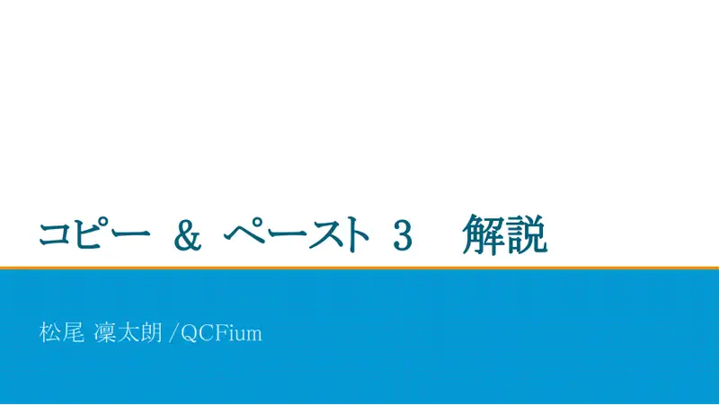
1Naslovni slajd: Copy and Paste 3; analiza: QCFium (Matsuo Rintarō). -
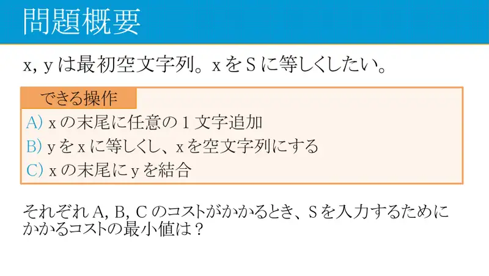
2Sažetak. A: dodaj znak; B: $y \leftarrow x$, $x \leftarrow$ „”; C: $x \leftarrow x + y$. Najmanji trošak da $x = S$. -
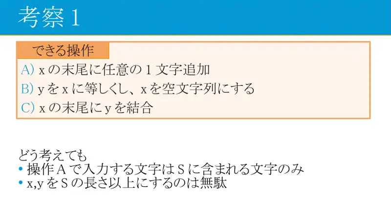
3Opažanje 1. Tipkamo samo znakove iz $S$; nema smisla da $x$ ili $y$ budu dulji od $S$.
← → tipke ili klik na sliku
Podzadaci 1–2 6 bodova
Koraci algoritma
Dijkstra po stanjima
izvorni slajdovi 4–7
-
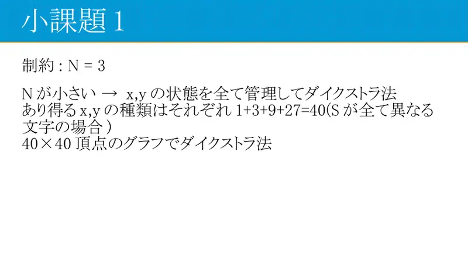
4$N = 3$: stanja $(x, y)$, najviše $40 \times 40$ (svi nizovi duljine $\le 3$ nad 3 slova); Dijkstra. -
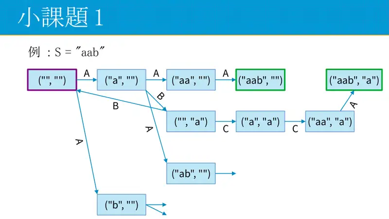
5Primjer grafa stanja za $S = $ aab. -
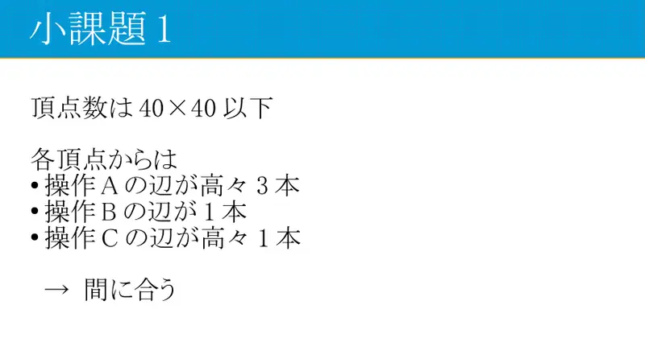
6Iz svakog stanja najviše 3 brida A, 1 brid B, 1 brid C. -
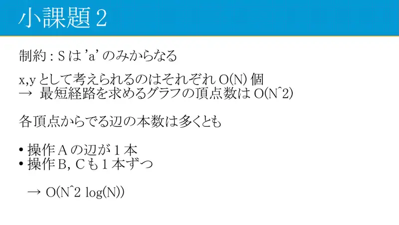
7Samo a: $x, y$ određeni duljinom → $O(N^2)$ stanja, $O(N^2\log N)$.
← → tipke ili klik na sliku
Podzadatak 3 14 bodova
Koraci algoritma
Sve su podnizovi
izvorni slajdovi 8–9
-
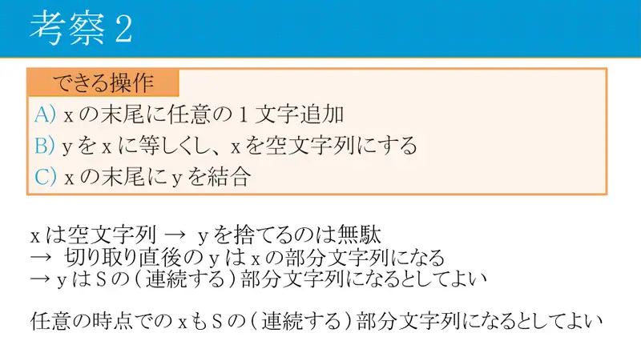
8Opažanje 2. Nakon B zaslon je prazan, pa je bacanje $y$ rasipno → $y$ je uvijek podniz od $S$, kao i $x$ u svakom trenutku. -
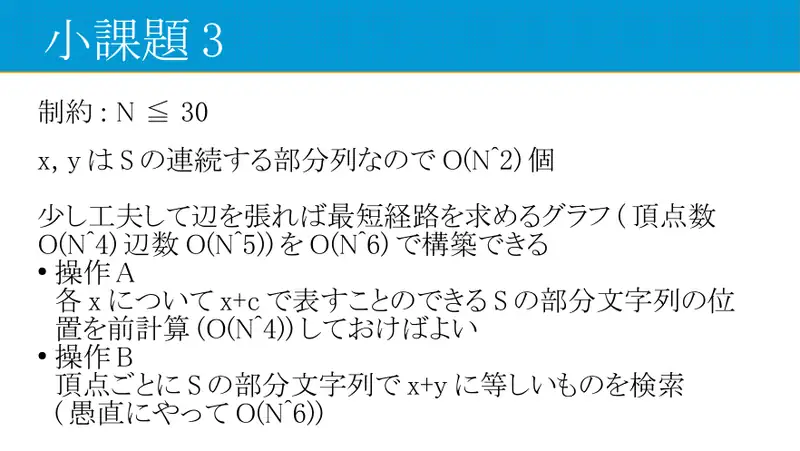
9$N \le 30$: $x, y$ su podnizovi ($O(N^2)$ svaki) → graf s $O(N^4)$ vrhova i $O(N^5)$ bridova, gradnja $O(N^6)$ s predizračunom.
← → tipke ili klik na sliku
Opažanje 3: DP po fazama
Koraci algoritma
dp[l][r] i greedy lijepljenje
izvorni slajdovi 10–17
-
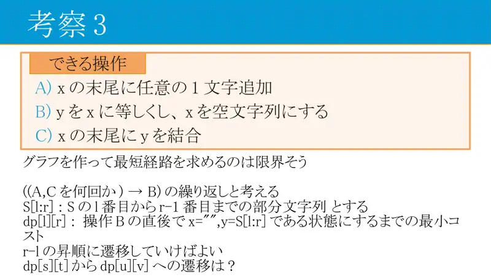
10Graf stanja ne skalira. Proces = ponavljanje „(A i C nekoliko puta) → B”. $dp[l][r]$ = najmanji trošak da nakon B bude $x = $ „”, $y = S[l:r)$. Prijelazi po rastućem $r - l$. Kako iz $dp[s][t]$ u $dp[u][v]$? -
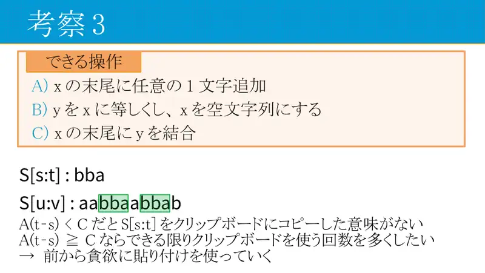
11Ako $A(t-s) < C$, kopiranje $S[s:t)$ nema smisla. Inače želimo što više lijepljenja → greedy slijeva. -
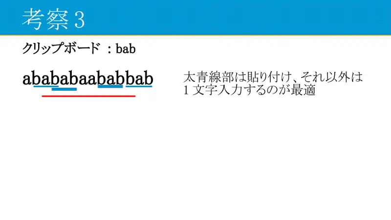
12Primjer: međuspremnik bab; plavo = lijepljenje, ostalo tipkanje. -
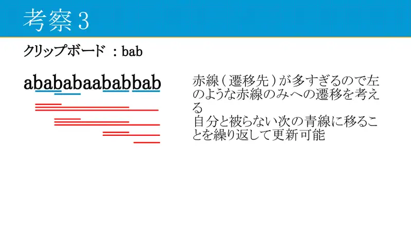
13Prijelaza (crvene linije) je previše; gledaj samo prijelaze „skoči na sljedeću pojavu koja se ne preklapa”. -
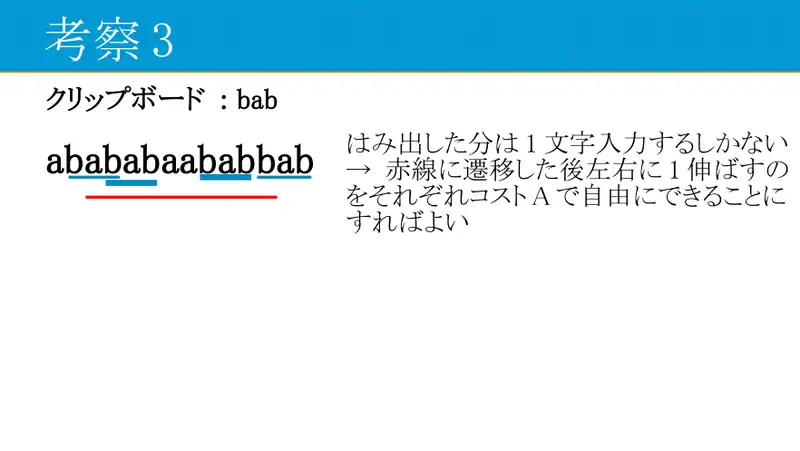
14Znakovi koji „vire” izvan lijepljenja tipkaju se; nakon skoka dopusti proširenje za 1 lijevo/desno po trošku $A$. -
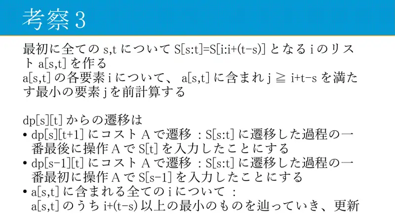
15Predizračun: $a[s,t]$ = popis $i$ sa $S[i:i+L) = S[s:t)$; za svaki $i$ prva pojava $j \ge i + L$. Prijelazi: $dp[s][t+1]$ i $dp[s-1][t]$ za $A$; za svaki $i \in a[s,t]$ slijedi lanac i ažuriraj. -
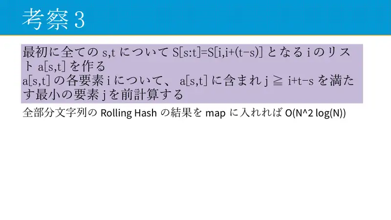
16Popisi pojava: rolling hash svih podnizova u map, $O(N^2\log N)$. -
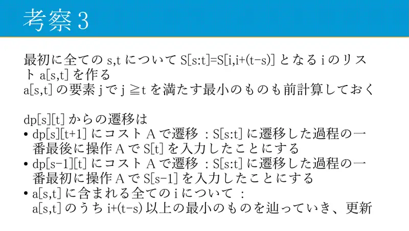
17Predizračunaj i prvu pojavu $j \ge t$; prijelazi kao gore.
← → tipke ili klik na sliku
Podzadaci 4–6 80 bodova
Koraci algoritma
Grupiranje i složenost
izvorni slajdovi 18–23
-
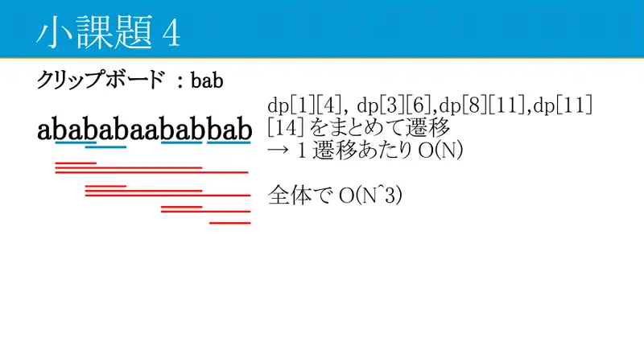
18$N \le 200$: sve $dp$ istog sadržaja (npr. $dp[1][4], dp[3][6], dp[8][11], dp[11][14]$) prelaze zajedno; $O(N)$ po prijelazu → $O(N^3)$. -
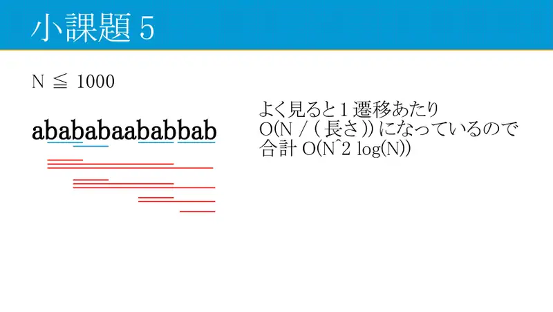
19$N \le 1000$: prijelaz zapravo košta $O(N / L)$, ukupno $O(N^2\log N)$. -
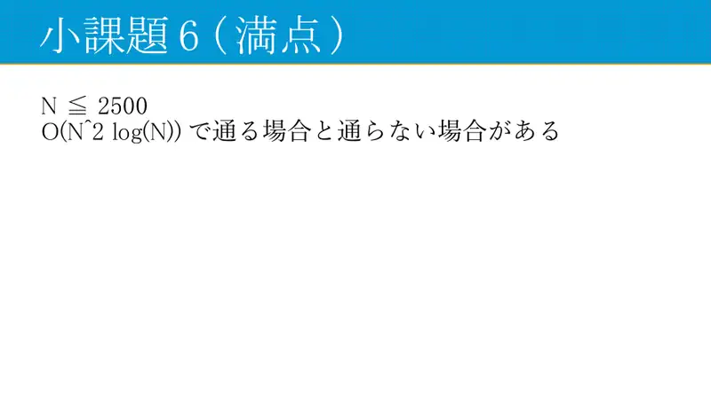
20$N \le 2500$: $O(N^2\log N)$ prolazi ili ne, ovisno o konstanti. -
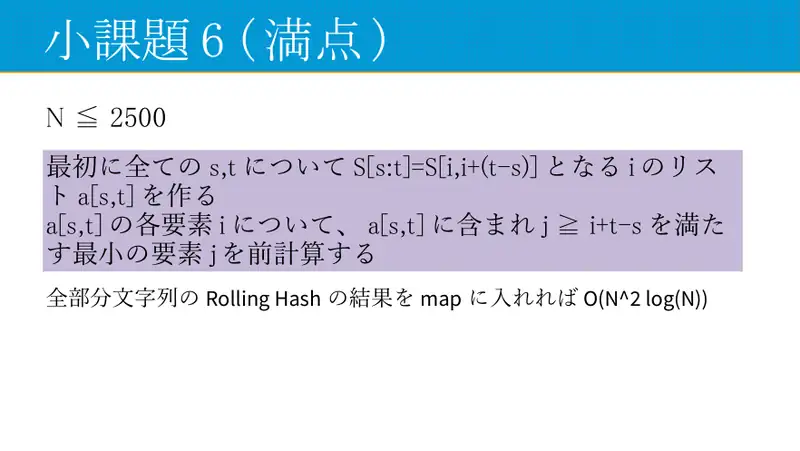
21Hashevi svih podnizova u jednu mapu… -
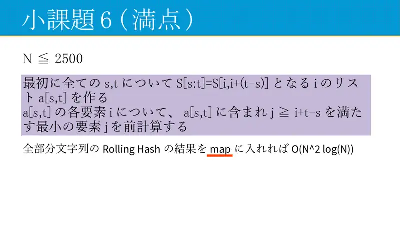
22… -
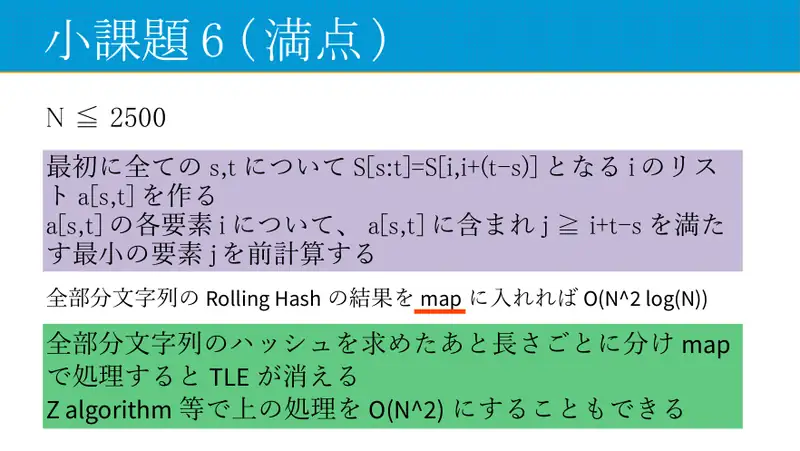
23…podijeli po duljinama pa tek onda u mapu — TLE nestaje; Z-algoritam daje $O(N^2)$.
← → tipke ili klik na sliku
Slajd
Kraj
izvorni slajd 24
-
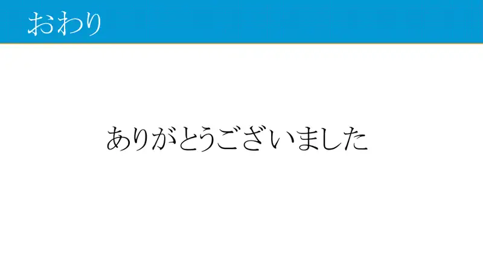
24Hvala na pažnji.
Sažetak
- Zaslon i međuspremnik su uvijek podnizovi $S$; proces je niz faza završenih izrezivanjem.
- $dp[l][r]$ po podnizovima; iz međuspremnika greedy lijepljenje po lancu nepreklapajućih pojava + rubno tipkanje.
- Prijelazi po različitim sadržajima: $\sum N\cdot N/L = O(N^2\log N)$.